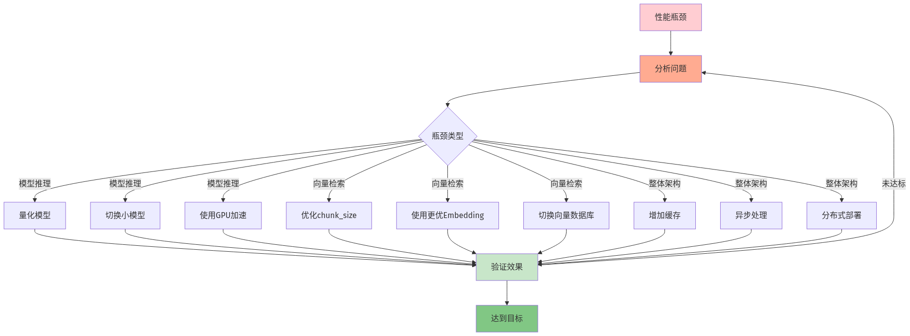

本地大模型知识库系列第10篇 | 性能优化
上一篇我们创建了Web界面，现在需要对系统进行性能优化，让知识库运行更快、回答更准确。性能优化涉及多个方面，包括模型量化、缓存策略、检索优化等。

01 模型量化
使用量化后的模型可以显著减少内存占用和推理时间：
# 使用4-bit量化模型
ollama run llama3:8b-instruct-q4_K_M
# 使用8-bit量化模型（平衡性能和质量）
ollama run llama3:8b-instruct-q8_002 添加缓存机制
对相似问题进行缓存，避免重复计算：
import hashlib
import json
from functools import lru_cache
class CachedQA:
def __init__(self, cache_size=1000):
self.qa = KnowledgeBaseQA()
self.cache = {}
self.cache_size = cache_size
def _get_cache_key(self, query):
return hashlib.md5(query.encode()).hexdigest()
def answer(self, query):
key = self._get_cache_key(query)
if key in self.cache:
result = self.cache[key]
result["response_time"] = 0.01
return result
result = self.qa.answer(query)
if len(self.cache) >= self.cache_size:
oldest_key = min(self.cache.keys())
del self.cache[oldest_key]
self.cache[key] = result
return result03 检索优化
通过调整检索参数提高准确性和速度：
def optimize_retrieval(vector_store, k=5, score_threshold=0.7):
retriever = vector_store.as_retriever(
search_kwargs={
"k": k,
"score_threshold": score_threshold
}
)
return retriever
# 使用更精确的检索策略
retriever = optimize_retrieval(qa.vector_store, k=4, score_threshold=0.75)
# 使用MMR（Maximal Marginal Relevance）提高多样性
retriever = vector_store.as_retriever(
search_type="mmr",
search_kwargs={"k": 5, "fetch_k": 20}
)04 异步处理
使用异步处理提高并发能力：
import asyncio
class AsyncQA:
def __init__(self):
self.qa = KnowledgeBaseQA()
asyncdef answer_async(self, query):
loop = asyncio.get_event_loop()
returnawait loop.run_in_executor(
None,
self.qa.answer,
query
)
# 并发处理多个查询
asyncdef process_batch(queries):
async_qa = AsyncQA()
tasks = [async_qa.answer_async(q) for q in queries]
returnawait asyncio.gather(*tasks)⚠️ 常见问题
1. 量化模型效果差：尝试更高精度的量化或调整prompt
2. 缓存命中率低：优化缓存键的生成策略
3. 检索结果不准确：调整k值和score_threshold
4. 并发性能差：使用异步处理和线程池
—— 未完待续 ——
本地大模型知识库系列第10篇
下一篇：多模态支持——图文混合知识库